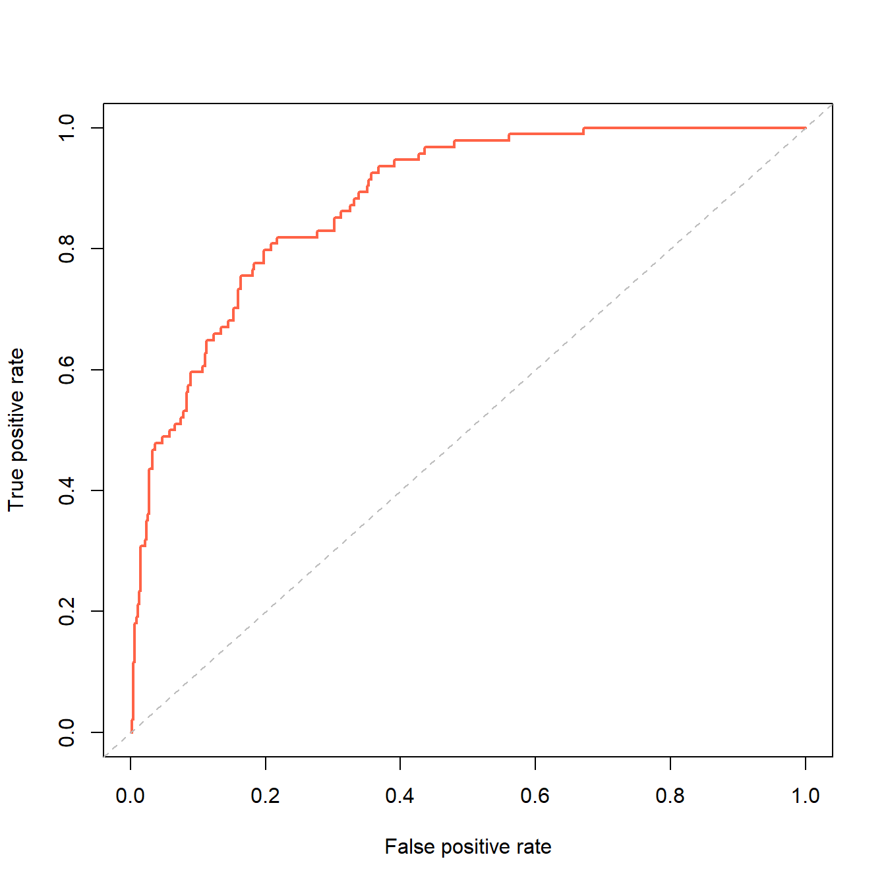
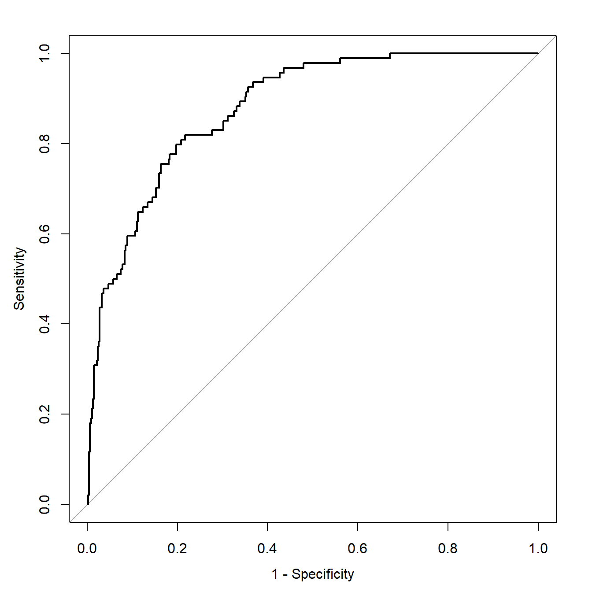

rm(list = ls())
lowbirth <- read.csv("./datasets/lowbirth.csv")
library(dplyr)
## Warning: package 'dplyr' was built under R version 4.2.3
##
## Attaching package: 'dplyr'
## The following objects are masked from 'package:stats':
##
## filter, lag
## The following objects are masked from 'package:base':
##
## intersect, setdiff, setequal, union
tmp <- lowbirth %>%
mutate(across(where(is.character),as.factor),
vent = factor(vent),
black = ifelse(race == "black",1,0),
white = ifelse(race == "white",1,0),
other = ifelse(race %in% c("native American","oriental"),1,0)
) %>%
select(- race)
glimpse(tmp)
## Rows: 565
## Columns: 12
## $ birth <dbl> 81.514, 81.552, 81.558, 81.593, 81.610, 81.624, 81.626, 81.68…
## $ lowph <dbl> 7.250000, 7.059998, 7.250000, 6.969997, 7.320000, 7.160000, 7…
## $ pltct <int> 244, 114, 182, 54, 282, 153, 229, 182, 361, 378, 255, 186, 26…
## $ bwt <int> 1370, 620, 1480, 925, 1255, 1350, 1310, 1110, 1180, 970, 770,…
## $ delivery <fct> abdominal, vaginal, vaginal, abdominal, vaginal, abdominal, v…
## $ apg1 <int> 7, 1, 8, 5, 9, 4, 6, 6, 6, 2, 4, 8, 1, 8, 5, 9, 9, 9, 6, 2, 1…
## $ vent <fct> 0, 1, 0, 1, 0, 0, 1, 0, 0, 1, 1, 0, 1, 1, 0, 1, 0, 0, 1, 0, 1…
## $ sex <fct> female, female, male, female, female, female, male, male, mal…
## $ dead <int> 0, 1, 0, 1, 0, 0, 0, 0, 0, 1, 0, 0, 0, 0, 0, 0, 0, 0, 1, 0, 0…
## $ black <dbl> 0, 1, 1, 1, 1, 1, 0, 1, 0, 0, 1, 0, 1, 0, 0, 1, 0, 1, 1, 1, 0…
## $ white <dbl> 1, 0, 0, 0, 0, 0, 1, 0, 1, 1, 0, 1, 0, 1, 1, 0, 1, 0, 0, 0, 1…
## $ other <dbl> 0, 0, 0, 0, 0, 0, 0, 0, 0, 0, 0, 0, 0, 0, 0, 0, 0, 0, 0, 0, 0…26 C-index的计算
C-statistic（C-index）是评价模型区分度的指标之一，在logistic模型中，C-statistic就是AUC，在生存资料中，C-statistic和AUC略有不同。
下面给大家分别介绍logistic和cox回归的C-statistic计算方法。
26.1 logistic回归的C-statistic
今天学习C-index的4种计算方法，在二分类变量中，C-statistic就是AUC，二者在数值上是一样的。
使用lowbirth数据集，这个数据集是关于低出生体重儿是否会死亡的数据集，其中dead这一列是结果变量，0代表死亡，1代表存活，其余列都是预测变量。数据的预处理和之前一样。
26.1.1 方法1
使用rms包构建模型，模型结果中Rank Discrim.下面的C 就是C-Statistic，本模型中C-Statistic = 0.879。
library(rms)
## Loading required package: Hmisc
## Loading required package: lattice
## Loading required package: survival
## Loading required package: Formula
## Loading required package: ggplot2
## Warning: package 'ggplot2' was built under R version 4.2.3
##
## Attaching package: 'Hmisc'
## The following objects are masked from 'package:dplyr':
##
## src, summarize
## The following objects are masked from 'package:base':
##
## format.pval, units
## Loading required package: SparseM
##
## Attaching package: 'SparseM'
## The following object is masked from 'package:base':
##
## backsolve
dd <- datadist(tmp)
options(datadist="dd")
fit2 <- lrm(dead ~ birth + lowph + pltct + bwt + vent + black + white,
data = tmp,x=T,y=T)
fit2
## Logistic Regression Model
##
## lrm(formula = dead ~ birth + lowph + pltct + bwt + vent + black +
## white, data = tmp, x = T, y = T)
##
## Model Likelihood Discrimination Rank Discrim.
## Ratio Test Indexes Indexes
## Obs 565 LR chi2 167.56 R2 0.432 C 0.879
## 0 471 d.f. 7 R2(7,565)0.247 Dxy 0.759
## 1 94 Pr(> chi2) <0.0001 R2(7,235.1)0.495 gamma 0.759
## max |deriv| 1e-06 Brier 0.095 tau-a 0.211
##
## Coef S.E. Wald Z Pr(>|Z|)
## Intercept 38.3815 11.0303 3.48 0.0005
## birth -0.1201 0.0914 -1.31 0.1890
## lowph -4.1451 1.1881 -3.49 0.0005
## pltct -0.0017 0.0019 -0.91 0.3644
## bwt -0.0031 0.0006 -5.14 <0.0001
## vent=1 2.7526 0.7436 3.70 0.0002
## black 1.1974 0.8448 1.42 0.1564
## white 0.8597 0.8655 0.99 0.320626.1.2 方法2
ROCR包计算AUC，logistic回归的AUC就是C-statistic。这种方法和SPSS得到的一样。
library(ROCR)
tmp$predvalue<-predict(fit2)
# 取出C-Statistics，和上面结果一样
pred <- prediction(tmp$predvalue, tmp$dead)
auc <- round(performance(pred, "auc")@y.values[[1]],digits = 4)这个包也是用来画ROC曲线常用的包，可以根据上面的结果直接画出ROC曲线：
perf <- performance(pred,"tpr","fpr")
plot(perf,col="tomato",lwd=2)
abline(0,1,lty=2, col="grey")
26.1.3 方法3
pROC包计算AUC，这个包也是画ROC曲线常用的R包，但是这个包在使用时需要注意，这部分内容会在后面详细介绍。
library(pROC)
## Type 'citation("pROC")' for a citation.
##
## Attaching package: 'pROC'
## The following objects are masked from 'package:stats':
##
## cov, smooth, var
# 计算AUC，也就是C-statistic
roc(tmp$dead, tmp$predvalue, legacy.axes = T, print.auc = T, print.auc.y = 45)
## Setting levels: control = 0, case = 1
## Setting direction: controls < cases
##
## Call:
## roc.default(response = tmp$dead, predictor = tmp$predvalue, legacy.axes = T, print.auc = T, print.auc.y = 45)
##
## Data: tmp$predvalue in 471 controls (tmp$dead 0) < 94 cases (tmp$dead 1).
## Area under the curve: 0.8794也是可以直接画法ROC曲线的：
roc.plot <- roc(tmp$dead, tmp$predvalue)
## Setting levels: control = 0, case = 1
## Setting direction: controls < cases
plot(roc.plot,legacy.axes=T)
26.1.4 方法4
使用Hmisc包。结果中的C就是C-Statistic。
library(Hmisc)
somers2(tmp$predvalue, tmp$dead)
## C Dxy n Missing
## 0.8793875 0.7587749 565.0000000 0.000000026.2 cox回归的C-statistic
cox回归的C-statistic可以用survival包计算，需要注意，生存分析的C-statistic和AUC是不一样的。
使用survival包自带的lung数据集进行演示。
library(survival)
library(dplyr)
df1 <- lung %>%
mutate(status=ifelse(status == 1,1,0))
str(lung)
## 'data.frame': 228 obs. of 10 variables:
## $ inst : num 3 3 3 5 1 12 7 11 1 7 ...
## $ time : num 306 455 1010 210 883 ...
## $ status : num 2 2 1 2 2 1 2 2 2 2 ...
## $ age : num 74 68 56 57 60 74 68 71 53 61 ...
## $ sex : num 1 1 1 1 1 1 2 2 1 1 ...
## $ ph.ecog : num 1 0 0 1 0 1 2 2 1 2 ...
## $ ph.karno : num 90 90 90 90 100 50 70 60 70 70 ...
## $ pat.karno: num 100 90 90 60 90 80 60 80 80 70 ...
## $ meal.cal : num 1175 1225 NA 1150 NA ...
## $ wt.loss : num NA 15 15 11 0 0 10 1 16 34 ...R语言自带的coxph函数即可给出C-index，非常简单：
cox_fit1 <- coxph(Surv(time, status) ~ age + sex + ph.ecog + ph.karno + pat.karno,
data = lung,x = T, y = T)
summary(cox_fit1)
## Call:
## coxph(formula = Surv(time, status) ~ age + sex + ph.ecog + ph.karno +
## pat.karno, data = lung, x = T, y = T)
##
## n= 223, number of events= 160
## (5 observations deleted due to missingness)
##
## coef exp(coef) se(coef) z Pr(>|z|)
## age 0.011383 1.011448 0.009510 1.197 0.23134
## sex -0.561464 0.570373 0.170689 -3.289 0.00100 **
## ph.ecog 0.565533 1.760386 0.186716 3.029 0.00245 **
## ph.karno 0.015853 1.015979 0.009853 1.609 0.10762
## pat.karno -0.010111 0.989940 0.006881 -1.470 0.14169
## ---
## Signif. codes: 0 '***' 0.001 '**' 0.01 '*' 0.05 '.' 0.1 ' ' 1
##
## exp(coef) exp(-coef) lower .95 upper .95
## age 1.0114 0.9887 0.9928 1.030
## sex 0.5704 1.7532 0.4082 0.797
## ph.ecog 1.7604 0.5681 1.2209 2.538
## ph.karno 1.0160 0.9843 0.9965 1.036
## pat.karno 0.9899 1.0102 0.9767 1.003
##
## Concordance= 0.647 (se = 0.025 )
## Likelihood ratio test= 32.9 on 5 df, p=4e-06
## Wald test = 33 on 5 df, p=4e-06
## Score (logrank) test = 33.79 on 5 df, p=3e-06Concordance就是C-statistic，本次示例中为0.647。
以上就是C-statistic的计算。
获取lowbirth数据请在公众号：医学和生信笔记 后台回复20220520